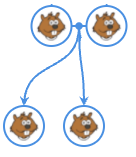
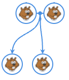

Enquiry
A Beaver stole some fruits!
A private detective found his parents. They are in blue on the family tree.
The enquiry helped find his grand parents. They are in blue on the family tree.
The arrows point to the children of each Beaver couple..
The enquiry showed that the beaver in blue on the family tree, have a common ancestor, that is also an ancestor of this Beaver.
We also know the size of the Beaver.
Click on some Beavers and find the guilty one!
 
